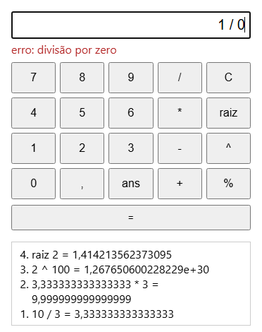

DOMINANDO O JAVASCRIPT EM 1 ANO
Resoluções comentadas dos exercícios do curso
Node.js e navegador · 9 módulos · 77 exercícios · 1 desafio integrador
Autor Desconhecido · theknowledgeisle.com
| Módulo | Tema | Artigos | Exercícios |
|---|---|---|---|
| MÓDULO 1 | Fundamentos do JavaScript | #01–#06, #11–#13, #15 | 1.1–1.11 |
| MÓDULO 2 | JavaScript Moderno (ES6+) | #07–#09, #18–#22, #27 | 2.1–2.10 |
| MÓDULO 3 | Node.js e Back-end | #30–#35 | 3.1–3.8 |
| MÓDULO 4 | APIs Avançadas | #33–#36 | 4.1–4.8 |
| MÓDULO 5 | Qualidade de Código | #36–#40 | 5.1–5.8 |
| MÓDULO 6 | React e Front-end Moderno | #41–#45 | 6.1–6.8 |
| MÓDULO 7 | Deploy e Infraestrutura | #46–#49 | 7.1–7.7 |
| MÓDULO 8 | Arquitetura e Padrões | #50–#52 | 8.1–8.8 |
| MÓDULO 9 | Tópicos Avançados | #53–#55 | 9.1–9.9 |
| DESAFIOS | Projetos integradores | todos | D1 |
Variáveis, tipos, operadores, controle de fluxo, funções, arrays, objetos, DOM e eventos. A base sobre a qual todo o resto é construído.
Artigos do site
teórico
Explique a diferença entre var, let e const. Em quais situações você usaria cada um? Por que var é considerado problemático no JavaScript moderno?
Use const por padrão. Use let quando precisar reatribuir (loops, acumuladores). Evite var — seu escopo de função é contraintuitivo e causa bugs difíceis de rastrear, especialmente dentro de loops e closures.
teórico
O que é coerção de tipos em JavaScript? Explique a diferença entre == e === com dois exemplos práticos que ilustrem situações onde o resultado seria diferente.
Coerção de tipos é a conversão automática que o JavaScript faz entre tipos diferentes em operações. == realiza coerção antes de comparar; === compara valor e tipo sem coerção.
// == com coerção — resultados surpreendentes
0 == false // true (false vira 0)
"" == false // true (ambos viram 0)
null == undefined // true (caso especial)
// === sem coerção — comportamento previsível
0 === false // false (number !== boolean)
"" === false // false (string !== boolean)
null === undefined// false (tipos diferentes)prático
Escreva uma função chamada classificarIdade(idade) que receba um número e retorne:
Dica: Use if/else if ou switch. Teste com os valores: -1, 5, 15, 30, 65.
function classificarIdade(idade) {
if (typeof idade !== "number" || isNaN(idade)) return "Valor inválido";
if (idade < 0) return "Valor inválido";
if (idade < 13) return "Criança";
if (idade < 18) return "Adolescente";
if (idade < 60) return "Adulto";
return "Idoso";
}
// Testes
console.log(classificarIdade(-1)); // "Valor inválido"
console.log(classificarIdade(5)); // "Criança"
console.log(classificarIdade(15)); // "Adolescente"
console.log(classificarIdade(30)); // "Adulto"
console.log(classificarIdade(65)); // "Idoso"Ponto de atenção: valide o tipo antes de comparar números. isNaN() garante que strings como "abc" não passem pela validação.
prático
(a) Imprima os números ímpares de 1 a 20 com for e depois com while, sem testar número por número. (b) Sem executar, diga o que o código abaixo imprime; depois rode, explique o resultado e corrija trocando uma única palavra.
for (var i = 0; i < 3; i++) setTimeout(() => console.log(i));Dica: qual é o escopo de var, e quando os callbacks do setTimeout rodam?
// (a) ímpares de 1 a 20, com for e com while
const comFor = [];
for (let i = 1; i <= 20; i += 2) comFor.push(i);
const comWhile = [];
let n = 1;
while (n <= 20) {
comWhile.push(n);
n += 2;
}
console.log(comFor.join(" "));
console.log(comWhile.join(" "));
// (b) a armadilha: var tem escopo de função, então os três callbacks veem o MESMO i
for (var i = 0; i < 3; i++) setTimeout(() => console.log("var:", i));
// com let, cada iteração do for ganha o seu próprio j
for (let j = 0; j < 3; j++) setTimeout(() => console.log("let:", j));1 3 5 7 9 11 13 15 17 19
1 3 5 7 9 11 13 15 17 19
var: 3
var: 3
var: 3
let: 0
let: 1
let: 2Começar em 1 e somar 2 percorre só os ímpares: 10 voltas em vez de 20 testes com %. No (b), var tem escopo de função: existe um único i para o laço inteiro. Os callbacks do setTimeout só rodam depois que o laço termina (o event loop espera a pilha esvaziar), e a essa altura i já vale 3. Com let, cada iteração do for cria a sua própria variável, e cada callback guarda a dele.
misto
Explique o que é closure e para que serve. Depois implemente uma função criarContador() que retorna um objeto com três métodos: incrementar(), decrementar() e valor(). Cada chamada deve manter o estado interno sem usar variáveis globais.
Closure é a capacidade de uma função "lembrar" as variáveis do escopo onde foi criada, mesmo depois que esse escopo encerrou. Permite criar estado privado sem variáveis globais.
function criarContador(inicial = 0) {
let _valor = inicial; // variável privada — só acessível via closures
return {
incrementar: () => { _valor++; },
decrementar: () => { _valor--; },
valor: () => _valor,
};
}
const c = criarContador(10);
c.incrementar(); c.incrementar();
c.decrementar();
console.log(c.valor()); // 11
const c2 = criarContador(); // estado independente
c2.incrementar();
console.log(c2.valor()); // 1 — não afeta cCada chamada a criarContador() cria um novo escopo com seu próprio _valor. Os dois contadores são completamente independentes.
prático
Dado o array de produtos abaixo, use os métodos de array para:
Dica: const produtos = [{nome:"Teclado",preco:250,estoque:5},{nome:"Mouse",preco:80,estoque:0},{nome:"Monitor",preco:1200,estoque:3},{nome:"Webcam",preco:300,estoque:0}]
const produtos = [
{nome:"Teclado", preco:250, estoque:5},
{nome:"Mouse", preco:80, estoque:0},
{nome:"Monitor", preco:1200,estoque:3},
{nome:"Webcam", preco:300, estoque:0}
];
// a) Filtrar com estoque > 0
const disponiveis = produtos.filter(p => p.estoque > 0);
// [{nome:"Teclado",...}, {nome:"Monitor",...}]
// b) Nomes dos disponíveis
const nomes = disponiveis.map(p => p.nome);
// ["Teclado", "Monitor"]
// c) Valor total do estoque
const totalEstoque = disponiveis.reduce(
(acc, p) => acc + p.preco * p.estoque, 0
);
// 250*5 + 1200*3 = 1250 + 3600 = 4850
// d) Produto mais caro
const maisCaro = produtos.reduce(
(max, p) => p.preco > max.preco ? p : max
);
// {nome:"Monitor", preco:1200, estoque:3}Atenção: filter, map e reduce são operações puras — não modificam o array original. Cada um retorna um novo valor.
prático
Crie um objeto livro com as propriedades: titulo, autor, anoPublicacao, paginas e disponivel. Depois escreva uma função formatarLivro(livro) que retorne uma string formatada: "Titulo (Ano) - Autor | X páginas | [Disponível/Indisponível]". Use destructuring na função.
const livro = {
titulo: "Clean Code",
autor: "Robert C. Martin",
anoPublicacao: 2008,
paginas: 431,
disponivel: true,
};
function formatarLivro({ titulo, autor, anoPublicacao, paginas, disponivel }) {
const status = disponivel ? "Disponível" : "Indisponível";
return `${titulo} (${anoPublicacao}) - ${autor} | ${paginas} páginas | [${status}]`;
}
console.log(formatarLivro(livro));
// "Clean Code (2008) - Robert C. Martin | 431 páginas | [Disponível]"Destructuring nos parâmetros da função elimina a necessidade de acessar livro.titulo, livro.autor etc. individualmente. É mais legível e evita repetição do nome do parâmetro.
teórico
O que é o DOM (Document Object Model)? Explique a diferença entre getElementById, querySelector e querySelectorAll. Quando você usaria cada um?
O DOM (Document Object Model) é a representação em árvore da estrutura HTML de uma página. O JavaScript acessa e modifica o DOM para alterar o conteúdo, estrutura e estilos da página dinamicamente.
Use getElementById quando souber o ID (mais performático). Use querySelector para seletores complexos ou classes. Use querySelectorAll quando precisar de múltiplos elementos.
prático
Escreva o código JavaScript para criar dinamicamente uma lista <ul> com 5 itens de sua escolha e adicioná-la ao body da página. Use createElement e appendChild. Cada item deve ter um evento de clique que exibe um alert com o texto do item clicado.
Dica: Você pode testar no console do navegador.
const lista = document.createElement("ul");
const itens = ["JavaScript", "Node.js", "React", "MongoDB", "CSS"];
itens.forEach(texto => {
const li = document.createElement("li");
li.textContent = texto;
li.addEventListener("click", () => alert(`Você clicou em: ${texto}`));
lista.appendChild(li);
});
document.body.appendChild(lista);Nota: li.textContent é seguro contra XSS. Nunca use li.innerHTML com dados do usuário, pois permite injeção de HTML/JavaScript malicioso.
misto
Explique o que é event delegation e por que ela é mais eficiente do que adicionar um listener em cada elemento de uma lista. Depois reescreva o código do exercício 1.9 usando event delegation — um único listener no <ul> em vez de um em cada <li>.
Event delegation delega o tratamento de eventos de elementos filhos para um ancestral comum. Em vez de N listeners (um por <li>), usamos 1 listener no <ul>. A propriedade event.target identifica qual elemento filho foi clicado.
Benefícios: menos memória (1 listener vs N), funciona automaticamente para elementos adicionados dinamicamente ao DOM, e simplifica a remoção de listeners.
// SEM event delegation — o problema: um listener por item
// lista.querySelectorAll("li").forEach(li => li.addEventListener("click", handler));
// COM event delegation — 1 único listener
const lista = document.createElement("ul");
const itens = ["JavaScript", "Node.js", "React", "MongoDB", "CSS"];
itens.forEach(texto => {
const li = document.createElement("li");
li.textContent = texto;
lista.appendChild(li);
});
// Um único listener no <ul> captura cliques em todos os <li>
lista.addEventListener("click", (e) => {
if (e.target.tagName === "LI") { // verifica se clicou em um item
alert(`Você clicou em: ${e.target.textContent}`);
}
});
document.body.appendChild(lista);prático
Implemente uma to-do list funcional no navegador (HTML + JS). Deve ter:
Estrutura sugerida — HTML + JavaScript em arquivo único:
<!DOCTYPE html><html lang="pt-BR">
<head><meta charset="UTF-8"><title>To-do List</title>
<style>
.concluida { text-decoration: line-through; opacity: 0.6; }
</style></head>
<body>
<h1>Minhas Tarefas</h1>
<div id="form">
<input id="input" type="text" placeholder="Nova tarefa..." />
<button id="btn-add">Adicionar</button>
<button id="btn-limpar">Limpar concluídas</button>
</div>
<p id="contador"></p>
<ul id="lista"></ul>
<script>
let tarefas = [];
function renderizar() {
const lista = document.getElementById("lista");
lista.innerHTML = "";
tarefas.forEach((t, i) => {
const li = document.createElement("li");
const cb = document.createElement("input");
cb.type = "checkbox"; cb.checked = t.concluida;
cb.addEventListener("change", () => toggle(i));
const span = document.createElement("span");
span.textContent = t.texto;
if (t.concluida) span.classList.add("concluida");
const btn = document.createElement("button");
btn.textContent = "✕";
btn.addEventListener("click", () => remover(i));
li.append(cb, span, btn);
lista.appendChild(li);
});
const pendentes = tarefas.filter(t => !t.concluida).length;
document.getElementById("contador").textContent =
`${pendentes} pendente(s) / ${tarefas.length} total`;
}
function adicionar() {
const input = document.getElementById("input");
const texto = input.value.trim();
if (!texto) return;
tarefas.push({ texto, concluida: false });
input.value = "";
renderizar();
}
function toggle(i) { tarefas[i].concluida = !tarefas[i].concluida; renderizar(); }
function remover(i) { tarefas.splice(i, 1); renderizar(); }
document.getElementById("btn-add").addEventListener("click", adicionar);
document.getElementById("btn-limpar").addEventListener("click", () => {
tarefas = tarefas.filter(t => !t.concluida); renderizar();
});
document.getElementById("input").addEventListener("keypress", e => {
if (e.key === "Enter") adicionar();
});
renderizar();
</script>
</body></html>Arrow functions, destructuring, spread/rest, Promises, async/await, Fetch API, módulos ES e classes. O JavaScript como é escrito profissionalmente hoje.
Artigos do site
prático
Reescreva as funções abaixo usando arrow functions. Depois explique em qual situação arrow functions NÃO devem ser usadas (dica: relacionado ao this).
// Arrow functions
const dobrar = n => n * 2;
const saudar = nome => `Olá, ${nome}!`;
const soma = (a, b) => a + b;
// Arrow functions NÃO devem ser usadas quando:
// 1. Como métodos de objetos que usam "this"
const obj = {
valor: 42,
// ERRADO — "this" será undefined ou window
errado: () => console.log(this.valor),
// CORRETO — function normal preserva "this"
correto() { console.log(this.valor); }
};
// 2. Como construtores (new ArrowFn() lança erro)
// 3. Como event listeners que precisam de "this" para o elemento
// 4. Como métodos de prototypeprático
Dado o objeto usuario abaixo, use destructuring para extrair as propriedades em variáveis separadas. Depois use spread para criar um novo objeto com a propriedade ativo: true adicionada, sem modificar o original.
Dica: const usuario = { id: 1, nome: "Ana", email: "ana@email.com", cidade: "São Paulo" }
const usuario = { id: 1, nome: "Ana", email: "ana@email.com", cidade: "São Paulo" };
// Destructuring — extrai propriedades em variáveis
const { id, nome, email, cidade } = usuario;
// Com renomeação
const { nome: nomeUsuario, email: emailUsuario } = usuario;
// Spread — cria novo objeto sem modificar o original
const usuarioAtivo = { ...usuario, ativo: true };
console.log(usuarioAtivo);
// { id:1, nome:"Ana", email:"ana@email.com", cidade:"São Paulo", ativo:true }
console.log(usuario);
// { id:1, nome:"Ana", email:"ana@email.com", cidade:"São Paulo" } — inalteradoO spread operator cria uma cópia rasa (shallow copy). Para objetos aninhados, use structuredClone() ou JSON.parse(JSON.stringify(obj)) para cópia profunda.
prático
Escreva uma função somaTudo(...numeros) que aceite qualquer quantidade de argumentos numéricos e retorne a soma de todos. Use o parâmetro rest. Teste com: somaTudo(1,2,3), somaTudo(10,20,30,40,50), somaTudo().
Dica: somaTudo() sem argumentos deve retornar 0.
function somaTudo(...numeros) {
return numeros.reduce((acc, n) => acc + n, 0);
}
console.log(somaTudo(1, 2, 3)); // 6
console.log(somaTudo(10, 20, 30, 40, 50)); // 150
console.log(somaTudo()); // 0 (array vazio, valor inicial 0)teórico
Explique o que é o Event Loop do JavaScript e por que a linguagem é "single-threaded mas não bloqueante". O que significa uma Promise estar em estado "pending", "fulfilled" ou "rejected"?
O JavaScript é single-threaded: tem uma única call stack e executa um trecho de código por vez. Contudo, operações I/O (rede, disco) são delegadas ao ambiente (Node.js / browser) que as executa em paralelo. O Event Loop monitora a call stack e a fila de callbacks: quando a stack esvazia, pega o próximo callback da fila.
prático
Escreva uma função aguardar(ms) que retorna uma Promise que resolve após o número de milissegundos informado. Depois use async/await para escrever uma sequência que: aguarda 1s, loga "passo 1", aguarda 500ms, loga "passo 2", aguarda 200ms, loga "passo 3".
Dica: Use new Promise(resolve => setTimeout(resolve, ms)).
function aguardar(ms) {
return new Promise(resolve => setTimeout(resolve, ms));
}
async function sequencia() {
await aguardar(1000);
console.log("passo 1");
await aguardar(500);
console.log("passo 2");
await aguardar(200);
console.log("passo 3");
}
sequencia();
// Após 1.0s: "passo 1"
// Após 1.5s: "passo 2"
// Após 1.7s: "passo 3"prático
Use a Fetch API para consumir o endpoint público https://jsonplaceholder.typicode.com/users e:
Dica: jsonplaceholder.typicode.com é uma API pública gratuita para testes.
function criarTimeout(ms) {
return new Promise((_, reject) =>
setTimeout(() => reject(new Error("Timeout: requisição demorou mais de 5s")), ms)
);
}
async function buscarUsuarios() {
const loadingEl = document.createElement("p");
loadingEl.textContent = "Carregando...";
document.body.appendChild(loadingEl);
try {
const resposta = await Promise.race([
fetch("https://jsonplaceholder.typicode.com/users"),
criarTimeout(5000),
]);
if (!resposta.ok) throw new Error(`HTTP ${resposta.status}`);
const usuarios = await resposta.json();
usuarios.forEach(u => console.log(`${u.name} — ${u.email}`));
} catch (erro) {
console.error("Erro:", erro.message);
} finally {
loadingEl.remove(); // sempre remove o loading
}
}
buscarUsuarios();Promise.race() termina com a primeira promise que se resolver, cumprida ou rejeitada. Se o fetch demorar mais de 5s, o timeout rejeita primeiro e o catch captura o erro. A requisição, porém, continua rodando em segundo plano. Hoje a forma recomendada é fetch(url, { signal: AbortSignal.timeout(5000) }): o próprio fetch é cancelado e rejeita com um erro de nome TimeoutError.
teórico
Explique a diferença entre export default e export nomeado. Quando você usaria cada um? Como você importaria um módulo que tem tanto um export default quanto exports nomeados?
// export default: uma exportação principal por módulo
export default function calcular() { ... }
// importar: import calcular from "./calc.js" — nome livre
// export nomeado: múltiplas exportações por módulo
export function somar(a, b) { return a + b; }
export const PI = 3.14159;
// importar: import { somar, PI } from "./math.js" — nome obrigatório
// Importar os dois juntos
import calcular, { somar, PI } from "./modulo.js";Use export default para a exportação principal de um módulo (ex: componente React, classe principal). Use exports nomeados para utilitários e constantes que coexistem no mesmo arquivo.
prático
Crie uma classe ContaBancaria com:
class ContaBancaria {
#saldo;
#historico = [];
constructor(saldoInicial = 0) {
if (saldoInicial < 0) throw new Error("Saldo inicial não pode ser negativo.");
this.#saldo = saldoInicial;
this.#historico.push({ tipo: "abertura", valor: saldoInicial });
}
get saldo() { return this.#saldo; }
depositar(valor) {
if (valor <= 0) throw new Error("Valor deve ser positivo.");
this.#saldo += valor;
this.#historico.push({ tipo: "deposito", valor, saldo: this.#saldo });
}
sacar(valor) {
if (valor <= 0) throw new Error("Valor deve ser positivo.");
if (valor > this.#saldo) throw new Error("Saldo insuficiente.");
this.#saldo -= valor;
this.#historico.push({ tipo: "saque", valor, saldo: this.#saldo });
}
extrato() { return [...this.#historico]; } // cópia, não referência
static criarContaZerada() { return new ContaBancaria(0); }
}
const conta = new ContaBancaria(1000);
conta.depositar(500);
conta.sacar(200);
console.log(conta.saldo); // 1300
console.log(conta.extrato()); // [{tipo:"abertura",...}, ...]misto
Explique a diferença entre erros síncronos e assíncronos em JavaScript. Por que um try/catch comum não captura erros dentro de callbacks assíncronos sem await? Depois escreva um exemplo demonstrando o comportamento correto com async/await e o comportamento problemático com callbacks.
Erros síncronos ocorrem durante a execução normal e são capturáveis com try/catch. Erros assíncronos ocorrem em callbacks ou Promises — o try/catch só captura com await.
// PROBLEMA: try/catch não captura erro em callback assíncrono sem await
async function problematico() {
try {
setTimeout(() => {
throw new Error("Este erro NÃO é capturado!"); // process crash
}, 100);
} catch (e) {
console.log("Nunca chega aqui");
}
}
// CORRETO: await garante que o erro é capturável
async function correto() {
try {
await new Promise((_, reject) =>
setTimeout(() => reject(new Error("Capturado!")), 100)
);
} catch (e) {
console.log(e.message); // "Capturado!"
}
}prático
Crie classes de erro customizadas: ErroValidacao, ErroNaoEncontrado e ErroAutenticacao, todas estendendo Error. Cada uma deve ter: mensagem, código HTTP correspondente (422, 404, 401) e o nome da classe como propriedade name. Escreva uma função tratarErro(erro) que identifica o tipo e retorna um objeto { status, mensagem } adequado.
class ErroBase extends Error {
constructor(mensagem, statusHTTP) {
super(mensagem);
this.name = this.constructor.name;
this.statusHTTP = statusHTTP;
if (Error.captureStackTrace) Error.captureStackTrace(this, this.constructor);
}
}
class ErroValidacao extends ErroBase { constructor(msg) { super(msg, 422); } }
class ErroNaoEncontrado extends ErroBase { constructor(msg) { super(msg, 404); } }
class ErroAutenticacao extends ErroBase { constructor(msg) { super(msg, 401); } }
function tratarErro(erro) {
if (erro instanceof ErroBase) {
return { status: erro.statusHTTP, mensagem: erro.message };
}
// Erro não mapeado — interno
return { status: 500, mensagem: "Erro interno do servidor." };
}
// Uso
try {
throw new ErroValidacao("Email inválido.");
} catch (e) {
console.log(tratarErro(e)); // { status: 422, mensagem: "Email inválido." }
}Node.js, NPM, Express, middlewares, JWT, MongoDB, Mongoose e API REST completa. Construindo servidores profissionais.
Artigos do site
teórico
Explique as diferenças entre require() (CommonJS) e import/export (ESModules) no Node.js. Quando você usaria cada um? O que é necessário configurar no package.json para usar ESModules?
Use ESM em projetos novos — é o padrão moderno e permite melhor tree-shaking. Use CJS ao manter projetos legados ou ao usar bibliotecas que não suportam ESM.
prático
Escreva um script Node.js que:
Dica: Use fs.promises (a versão assíncrona com async/await).
const fs = require("fs").promises;
const path = require("path");
const ARQUIVO = path.join(__dirname, "dados.json");
async function adicionarRegistro(novoItem) {
let dados = [];
try {
const conteudo = await fs.readFile(ARQUIVO, "utf8");
dados = JSON.parse(conteudo);
if (!Array.isArray(dados)) throw new Error("O arquivo não contém um array.");
} catch (erro) {
if (erro.code === "ENOENT") {
console.log("Arquivo não existe — criando novo.");
} else if (erro instanceof SyntaxError) {
throw new Error(`JSON malformado: ${erro.message}`);
} else {
throw erro; // re-lança erros desconhecidos
}
}
dados.push({
id: Date.now(),
...novoItem,
criadoEm: new Date().toISOString(),
});
try {
await fs.writeFile(ARQUIVO, JSON.stringify(dados, null, 2), "utf8");
console.log("Salvo com sucesso. Total de registros:", dados.length);
} catch (erro) {
throw new Error(`Erro ao salvar: ${erro.message}`); // EACCES = sem permissão
}
}
adicionarRegistro({ nome: "Produto A" }).catch(console.error);teórico
O que é um middleware no Express? Explique o ciclo req → middleware → middleware → rota → res. O que acontece se um middleware não chamar next()? Qual a diferença entre app.use() e router.use()?
Um middleware é uma função que recebe (req, res, next) e executa lógica antes da rota final. A cadeia de middlewares forma um pipeline: cada um decide se passa para o próximo (next()) ou encerra a resposta.
// Se um middleware não chamar next() nem res.send():
// A requisição fica pendurada e o cliente nunca recebe resposta (timeout)
// app.use() registra middleware globalmente
app.use(express.json()); // aplica a TODAS as rotas
// router.use() registra apenas para um grupo de rotas
const router = express.Router();
router.use(autenticar); // aplica apenas às rotas deste router
app.use("/api", router);prático
Implemente os seguintes middlewares do zero (sem bibliotecas):
// logger
function logger(req, res, next) {
const inicio = Date.now();
res.on("finish", () => {
const duracao = Date.now() - inicio;
console.log(`${req.method} ${req.url} ${res.statusCode} ${duracao}ms`);
});
next();
}
// autenticar
function autenticar(req, res, next) {
const auth = req.headers.authorization;
if (!auth || auth !== "Bearer token-secreto") {
return res.status(401).json({ erro: "Não autorizado." });
}
next();
}
// limitarTamanho
function limitarTamanho(req, res, next) {
let tamanho = 0;
req.on("data", chunk => { tamanho += chunk.length; });
req.on("end", () => {
if (tamanho > 1024) {
return res.status(413).json({ erro: "Body muito grande (máx 1KB)." });
}
next();
});
}
// naoEncontrado — registrar APÓS todas as rotas
function naoEncontrado(req, res) {
res.status(404).json({ erro: `Rota não encontrada: ${req.method} ${req.path}` });
}prático
Implemente autenticação JWT do zero. Crie os endpoints:
const express = require("express");
const jwt = require("jsonwebtoken");
const bcrypt = require("bcryptjs");
const app = express();
app.use(express.json());
const SEGREDO = "segredo-muito-secreto-dev";
const usuarios = []; // memória — não use em produção
app.post("/auth/registrar", async (req, res) => {
const { nome, email, senha } = req.body;
if (usuarios.find(u => u.email === email))
return res.status(409).json({ erro: "Email já cadastrado." });
const hash = await bcrypt.hash(senha, 12);
const usuario = { id: Date.now(), nome, email, senha: hash };
usuarios.push(usuario);
const token = jwt.sign({ id: usuario.id, email }, SEGREDO, { expiresIn: "1h" });
res.status(201).json({ token });
});
app.post("/auth/login", async (req, res) => {
const { email, senha } = req.body;
const usuario = usuarios.find(u => u.email === email);
if (!usuario || !(await bcrypt.compare(senha, usuario.senha)))
return res.status(401).json({ erro: "Credenciais inválidas." });
const token = jwt.sign({ id: usuario.id, email }, SEGREDO, { expiresIn: "1h" });
res.json({ token });
});
function autenticar(req, res, next) {
try {
const token = req.headers.authorization?.split(" ")[1];
if (!token) return res.status(401).json({ erro: "Token necessário." });
req.usuario = jwt.verify(token, SEGREDO);
next();
} catch { res.status(401).json({ erro: "Token inválido." }); }
}
app.get("/auth/perfil", autenticar, (req, res) => {
const u = usuarios.find(u => u.id === req.usuario.id);
res.json({ id: u.id, nome: u.nome, email: u.email });
});Atenção: a comparação de credenciais usa a mesma mensagem de erro para "usuário não existe" e "senha errada" — isso evita user enumeration attacks.
teórico
Explique a diferença entre banco de dados relacional (SQL) e não-relacional (NoSQL) como MongoDB. Quais são as vantagens e desvantagens de cada abordagem? Em que tipo de projeto você escolheria um em vez do outro?
prático
Crie um schema Mongoose para Produto com:
const mongoose = require("mongoose");
const { Schema } = mongoose;
const produtoSchema = new Schema({
nome: { type: String, required: true, minlength: 2, trim: true },
preco: { type: Number, required: true, min: 0 },
categoria: { type: String, enum: ["eletronico","roupa","alimento","outro"], required: true },
estoque: { type: Number, default: 0, min: 0 },
ativo: { type: Boolean, default: true },
}, { timestamps: true }); // cria criadoEm e atualizadoEm automaticamente
produtoSchema.methods.resumo = function() {
return `${this.nome} — R$ ${this.preco.toFixed(2)} (${this.estoque} un.)`;
};
// Índice composto
produtoSchema.index({ categoria: 1, ativo: 1 });
module.exports = mongoose.model("Produto", produtoSchema);prático
Implemente um CRUD completo em Express + Mongoose para o modelo Produto do exercício anterior:
const express = require("express");
const mongoose = require("mongoose");
const Produto = require("./models/Produto");
const router = express.Router();
router.get("/", async (req, res, next) => {
try {
const filtros = {};
if (req.query.categoria) filtros.categoria = req.query.categoria;
const produtos = await Produto.find(filtros).lean();
res.json(produtos);
} catch (e) { next(e); }
});
router.get("/:id", async (req, res, next) => {
try {
if (!mongoose.isValidObjectId(req.params.id))
return res.status(400).json({ erro: "ID inválido." });
const produto = await Produto.findById(req.params.id).lean();
if (!produto) return res.status(404).json({ erro: "Produto não encontrado." });
res.json(produto);
} catch (e) { next(e); }
});
router.post("/", async (req, res, next) => {
try {
const produto = await Produto.create(req.body);
res.status(201).json(produto);
} catch (e) { next(e); }
});
router.put("/:id", async (req, res, next) => {
try {
const produto = await Produto.findByIdAndUpdate(
req.params.id,
{ $set: req.body },
{ new: true, runValidators: true }
);
if (!produto) return res.status(404).json({ erro: "Não encontrado." });
res.json(produto);
} catch (e) { next(e); }
});
router.delete("/:id", async (req, res, next) => {
try {
const produto = await Produto.findByIdAndDelete(req.params.id);
if (!produto) return res.status(404).json({ erro: "Não encontrado." });
res.json({ mensagem: `Produto "${produto.nome}" removido com sucesso.` });
} catch (e) { next(e); }
});
module.exports = router;Relacionamentos, validação com Zod, upload de arquivos, paginação, testes com Jest/Supertest e documentação com Swagger.
Artigos do site
teórico
Explique as três formas de modelar relacionamentos no MongoDB: embedding (documentos aninhados), referência (populate) e arrays de IDs. Quando você usaria cada abordagem? Dê um exemplo prático para cada.
prático
Crie um schema Mongoose para Pedido que referencia Usuario e contém um array de itens com referência a Produto. O pedido deve ter status (enum), total calculado e método calcularTotal() que soma preco × quantidade de cada item. Implemente uma rota GET /pedidos/:id que popula usuario e produtos dos itens.
Dica: Use .populate("usuario", "nome email") para trazer apenas os campos necessários.
const pedidoSchema = new Schema({
usuario: { type: Schema.Types.ObjectId, ref: "Usuario", required: true },
itens: [{
produto: { type: Schema.Types.ObjectId, ref: "Produto", required: true },
quantidade: { type: Number, required: true, min: 1 },
precoUnitario: { type: Number, required: true },
}],
status: { type: String, enum: ["pendente","pago","enviado","entregue","cancelado"], default: "pendente" },
total: { type: Number, default: 0 },
}, { timestamps: true });
pedidoSchema.methods.calcularTotal = function() {
this.total = this.itens.reduce((acc, i) => acc + i.precoUnitario * i.quantidade, 0);
return this.total;
};
// Rota GET /pedidos/:id
router.get("/:id", async (req, res, next) => {
try {
const pedido = await Pedido
.findById(req.params.id)
.populate("usuario", "nome email")
.populate("itens.produto", "nome preco")
.lean();
if (!pedido) return res.status(404).json({ erro: "Pedido não encontrado." });
res.json(pedido);
} catch (e) { next(e); }
});prático
Usando a biblioteca Zod, crie schemas de validação para:
const { z } = require("zod");
const schemaCadastro = z.object({
nome: z.string().min(2).trim(),
email: z.string().email(),
senha: z.string().min(8).regex(/[A-Z]/, "Requer maiúscula").regex(/[0-9]/, "Requer número"),
confirmarSenha: z.string(),
}).refine(d => d.senha === d.confirmarSenha, {
message: "Senhas não conferem.",
path: ["confirmarSenha"],
});
const schemaProduto = z.object({
nome: z.string().min(2).trim(),
preco: z.number().positive(),
categoria: z.enum(["eletronico","roupa","alimento","outro"]),
estoque: z.number().int().min(0),
});
// Middleware genérico
function validar(schema) {
return (req, res, next) => {
const resultado = schema.safeParse(req.body);
if (!resultado.success) {
const erros = resultado.error.errors.map(e => ({
campo: e.path.join("."),
mensagem: e.message,
}));
return res.status(422).json({ erro: "Dados inválidos.", detalhes: erros });
}
req.body = resultado.data; // substitui com dados parseados e tipados
next();
};
}
app.post("/usuarios", validar(schemaCadastro), criarUsuario);prático
Configure Multer para aceitar upload de imagens com:
const multer = require("multer");
const path = require("path");
const storage = multer.diskStorage({
destination: "uploads/",
filename: (req, file, cb) => {
const nome = `${Date.now()}-${file.originalname.replace(/\s+/g, "_")}`;
cb(null, nome);
},
});
const upload = multer({
storage,
limits: { fileSize: 5 * 1024 * 1024 }, // 5MB
fileFilter: (req, file, cb) => {
const permitidos = ["image/jpeg", "image/jpg", "image/png", "image/webp"];
if (permitidos.includes(file.mimetype)) return cb(null, true);
cb(new Error("Tipo de arquivo não aceito. Use JPEG, PNG ou WebP."));
},
});
router.post("/:id/imagem", upload.single("imagem"), async (req, res, next) => {
try {
if (!req.file) return res.status(400).json({ erro: "Nenhum arquivo enviado." });
const produto = await Produto.findByIdAndUpdate(
req.params.id,
{ imagemUrl: `/uploads/${req.file.filename}` },
{ new: true }
);
if (!produto) return res.status(404).json({ erro: "Produto não encontrado." });
res.json({ imagemUrl: produto.imagemUrl });
} catch (e) { next(e); }
});
// Handler de erro do Multer
app.use((err, req, res, next) => {
if (err.message.includes("Tipo de arquivo")) return res.status(415).json({ erro: err.message });
next(err);
});misto
Explique o problema de performance do uso de skip/limit em coleções muito grandes no MongoDB. Depois implemente paginação baseada em cursor para a rota GET /produtos usando o campo _id como cursor: a resposta deve incluir os dados, um campo nextCursor e hasMore.
Dica: Cursor: produtos com _id > lastId, limitado por pageSize.
O problema do skip/limit: MongoDB precisa percorrer e descartar os primeiros N documentos antes de retornar os resultados. Em coleções com milhões de registros, skip(900000) ainda percorre 900.000 documentos — lento e ineficiente.
// Paginação baseada em cursor — usa _id como ponteiro
// _id é indexado por padrão e é monotonicamente crescente
router.get("/", async (req, res, next) => {
try {
const { cursor, pageSize = 10, categoria } = req.query;
const limite = Math.min(50, parseInt(pageSize));
const filtros = {};
if (categoria) filtros.categoria = categoria;
// Se cursor fornecido, busca apenas documentos após ele
if (cursor && mongoose.isValidObjectId(cursor)) {
filtros._id = { $gt: cursor };
}
// Busca pageSize + 1 para saber se há próxima página
const produtos = await Produto.find(filtros)
.sort({ _id: 1 })
.limit(limite + 1)
.lean();
const hasMore = produtos.length > limite;
const dados = hasMore ? produtos.slice(0, limite) : produtos;
const nextCursor = hasMore ? dados[dados.length - 1]._id : null;
res.json({ dados, nextCursor, hasMore });
} catch (e) { next(e); }
});Vantagem: independentemente da posição na coleção, a query usa sempre o índice de _id — O(log n) em vez de O(n).
teórico
Explique a diferença entre testes unitários, de integração e end-to-end (E2E). Quais são as vantagens e limitações de cada nível? O que é a "pirâmide de testes" e por que ela recomenda mais testes unitários?
prático
Escreva testes com Jest para uma função calculadoraFrete(peso, distancia, expresso) que retorna o custo do frete. Cubra:
function calculadoraFrete(peso, distancia, modalidade = "padrao") {
if (peso < 0) throw new Error("Peso não pode ser negativo.");
if (distancia < 0) throw new Error("Distância não pode ser negativa.");
if (modalidade === "retirada") return 0;
const base = peso * 2.5 + distancia * 0.01;
if (modalidade === "expresso") return Math.max(base * 3, 15);
if (modalidade === "padrao") return base;
throw new Error(`Modalidade inválida: ${modalidade}`);
}
// Testes
describe("calculadoraFrete", () => {
describe("frete padrão", () => {
it("calcula R$ 2,50/kg + R$ 0,01/km", () => {
expect(calculadoraFrete(2, 100)).toBeCloseTo(5.0 + 1.0); // 6
});
});
describe("frete expresso", () => {
it("cobra 3x o padrão com mínimo R$ 15", () => {
expect(calculadoraFrete(1, 10, "expresso")).toBeCloseTo(15); // 2.6*3=7.8, mín 15
expect(calculadoraFrete(5, 500, "expresso")).toBeCloseTo(52.5); // 17.5*3=52.5
});
});
describe("retirada em loja", () => {
it("sempre retorna 0", () => {
expect(calculadoraFrete(100, 999, "retirada")).toBe(0);
});
});
describe("validações", () => {
it("lança erro para peso negativo", () => {
expect(() => calculadoraFrete(-1, 10)).toThrow("Peso não pode ser negativo.");
});
it("lança erro para modalidade inválida", () => {
expect(() => calculadoraFrete(1, 1, "drone")).toThrow("Modalidade inválida");
});
});
});prático
Escreva testes de integração com Supertest para as rotas de Produto. Cubra ao menos:
const request = require("supertest");
const app = require("../src/app");
const mongoose = require("mongoose");
beforeAll(async () => {
await mongoose.connect(process.env.MONGODB_TEST_URL);
});
afterAll(async () => {
await mongoose.connection.dropDatabase();
await mongoose.connection.close();
});
describe("POST /produtos", () => {
it("cria produto com dados válidos — espera 201", async () => {
const res = await request(app)
.post("/produtos")
.send({ nome: "Teclado", preco: 250, categoria: "eletronico", estoque: 5 });
expect(res.status).toBe(201);
expect(res.body.nome).toBe("Teclado");
});
it("dados inválidos — espera 422 com mensagem", async () => {
const res = await request(app)
.post("/produtos")
.send({ nome: "A", preco: -10 }); // inválido
expect(res.status).toBe(422);
expect(res.body.erro).toBeDefined();
});
});
describe("GET /produtos/:id", () => {
it("ID inexistente — espera 404", async () => {
const fakeId = new mongoose.Types.ObjectId();
const res = await request(app).get(`/produtos/${fakeId}`);
expect(res.status).toBe(404);
});
});TypeScript, ESLint, Prettier, Git avançado, commits semânticos e TDD. Código que o time consegue manter.
Artigos do site
teórico
Explique a diferença entre interface e type em TypeScript. Em quais situações cada um é mais adequado? O que são union types e intersection types? Dê um exemplo prático de cada.
// interface: extensível, pode ser re-declarada (declaration merging)
interface Animal { nome: string; }
interface Animal { sons: string; } // merge válido
// type: mais flexível — suporta union, intersection, mapped types
type Status = "ativo" | "inativo"; // union
type Admin = Usuario & { nivel: number }; // intersection
type Opcional<T> = { [K in keyof T]?: T[K] }; // mapped type
// Regra prática:
// interface → modelos de objetos e classes (APIs públicas)
// type → unions, intersections, aliases complexosprático
Crie os seguintes tipos TypeScript para a API de tarefas:
enum PrioridadeTarefa { baixa = "baixa", media = "media", alta = "alta" }
type StatusTarefa = "pendente" | "em_progresso" | "concluida" | "cancelada";
interface Tarefa {
id: string;
titulo: string;
descricao?: string;
status: StatusTarefa;
prioridade: PrioridadeTarefa;
prazo?: Date;
usuarioId: string;
criadoEm: Date;
}
type TarefaInput = Omit<Tarefa, "id" | "criadoEm">;
type TarefaAtualizar = Partial<TarefaInput>;
interface PaginaResultado<T> {
dados: T[];
total: number;
pagina: number;
totalPaginas: number;
}
async function buscarTarefas(filtros: Partial<Tarefa>): Promise<PaginaResultado<Tarefa>> {
// implementação...
return { dados: [], total: 0, pagina: 1, totalPaginas: 0 };
}prático
Implemente uma função genérica validarOuLancar<T>(valor: unknown, schema: ZodSchema<T>): T que recebe um valor desconhecido, valida com um schema Zod e retorna o valor tipado ou lança um ErroValidacao customizado. Demonstre o uso em uma rota Express tipada.
Dica: Use z.safeParse() para capturar o erro sem lançar exceção diretamente.
import { z, ZodSchema } from "zod";
import { Request, Response, NextFunction } from "express";
class ErroValidacao extends Error {
constructor(public detalhes: { campo: string; mensagem: string }[]) {
super("Dados inválidos.");
this.name = "ErroValidacao";
}
}
function validarOuLancar<T>(valor: unknown, schema: ZodSchema<T>): T {
const resultado = schema.safeParse(valor);
if (!resultado.success) {
const detalhes = resultado.error.errors.map(e => ({
campo: e.path.join("."),
mensagem: e.message,
}));
throw new ErroValidacao(detalhes);
}
return resultado.data;
}
// Uso em rota Express tipada
const schemaProduto = z.object({
nome: z.string().min(2),
preco: z.number().positive(),
});
app.post("/produtos", (req: Request, res: Response, next: NextFunction) => {
try {
const dados = validarOuLancar(req.body, schemaProduto);
// "dados" é tipado como z.infer<typeof schemaProduto>
res.status(201).json(dados);
} catch (e) { next(e); }
});teórico
O que é linting e por que ele é importante em projetos de equipe? Qual a diferença entre erros e warnings no ESLint? Explique o que é o prettier e como ele difere do ESLint conceitualmente.
Linting é a análise estática do código para encontrar problemas potenciais antes da execução: bugs, estilos inconsistentes, padrões problemáticos. O ESLint é um linter — analisa o AST do código e reporta violações de regras.
teórico
O que é um commit semântico (Conventional Commits)? Explique os tipos: feat, fix, docs, style, refactor, test, chore. Por que eles são importantes para geração automática de CHANGELOG e versionamento semântico?
Commits semânticos seguem o padrão: tipo(escopo): descrição. Tipos principais:
feat: nova funcionalidade para o usuário
fix: correção de bug
docs: mudanças na documentação
style: formatação — sem mudança de lógica
refactor: refatoração — sem nova feature nem bug fix
test: adição ou correção de testes
chore: mudanças de build, configuração, dependências
// Importância:
// - Geração automática de CHANGELOG
// - Versionamento semântico automático (feat → MINOR, fix → PATCH)
// - Histórico legível por humanos e ferramentas
// - Fácil rastrear qual commit introduziu uma feature ou bugprático
Para cada situação abaixo, escreva a mensagem de commit semântico correta:
feat(auth): adicionar autenticação JWT às rotas de usuário
fix(pedido): corrigir cálculo do total que não incluía o frete
docs(api): atualizar documentação do endpoint de produtos
refactor(email): migrar serviço de email para Clean Architecture
test(tarefa): adicionar testes unitários para a entidade Tarefa
chore(config): configurar ESLint e Prettier no projetomisto
Explique o ciclo Red → Green → Refactor do TDD. Quais são os benefícios e as desvantagens de escrever testes antes do código? Quando o TDD é mais valioso e quando pode ser uma sobrecarga desnecessária?
O ciclo TDD: Red (escreve o teste que falha), Green (implementa o mínimo para passar), Refactor (melhora o código sem quebrar os testes).
prático
Aplique TDD para implementar uma função processarPagamento(valor, cartao, config). Comece escrevendo os testes para os seguintes cenários ANTES de implementar a função:
Dica: Escreva os testes primeiro, veja-os falhar (red), implemente o mínimo para passar (green), depois refatore.
// 1. ESCREVA OS TESTES PRIMEIRO (red)
describe("processarPagamento", () => {
it("aprova pagamento com cartão válido", async () => {
const resultado = await processarPagamento(100, cartaoValido, config);
expect(resultado.aprovado).toBe(true);
expect(resultado.transacaoId).toBeDefined();
});
it("rejeita valor negativo", async () => {
await expect(processarPagamento(-10, cartaoValido, config)).rejects.toThrow("Valor inválido");
});
it("rejeita cartão expirado", async () => {
const expirado = { ...cartaoValido, vencimento: "01/20" };
await expect(processarPagamento(100, expirado, config)).rejects.toThrow("Cartão expirado");
});
it("rejeita CVV com menos de 3 dígitos", async () => {
const semCvv = { ...cartaoValido, cvv: "12" };
await expect(processarPagamento(100, semCvv, config)).rejects.toThrow("CVV inválido");
});
it("trata falha do gateway", async () => {
const gateway = jest.fn().mockRejectedValue(new Error("Gateway timeout"));
await expect(processarPagamento(100, cartaoValido, { gateway }))
.rejects.toThrow("Gateway timeout");
});
});
// 2. IMPLEMENTAÇÃO MÍNIMA (green)
async function processarPagamento(valor, cartao, config) {
if (valor <= 0) throw new Error("Valor inválido.");
const [mes, ano] = cartao.vencimento.split("/").map(Number);
const expira = new Date(2000 + ano, mes - 1);
if (expira < new Date()) throw new Error("Cartão expirado.");
if (cartao.cvv.length < 3) throw new Error("CVV inválido.");
return config.gateway(valor, cartao);
}Componentes, JSX, hooks, estado global com Zustand, dados do servidor com React Query e SPAs com React Router.
Artigos do site
teórico
Explique o que são "re-renders" no React e como o Virtual DOM funciona. Quando um componente re-renderiza? Quais hooks existem para evitar re-renders desnecessários e como funcionam?
Um componente re-renderiza quando: seu estado muda (useState), suas props mudam, o componente pai renderiza (mesmo que as props não mudem), um Context que ele consome muda.
// Ferramentas para evitar re-renders desnecessários:
React.memo(Componente) // não re-renderiza se props não mudaram (shallow compare)
useMemo(() => cálculo, [deps]) // memoriza resultado de cálculo custoso
useCallback(() => função, [deps]) // memoriza referência de função
// Essencial quando a função é passada como prop para React.memo — sem useCallback,
// uma nova referência é criada a cada render, quebrando a memoizaçãoO Virtual DOM compara o DOM renderizado anteriormente com o novo (diffing) e aplica apenas as mudanças reais ao DOM físico — o que é caro. React agrupa múltiplas atualizações de estado em um único re-render (batching).
prático
Crie um componente React ListaTarefas que:
Dica: Use useCallback para as funções passadas como props.
// ItemTarefa.jsx
const ItemTarefa = React.memo(({ tarefa, onToggle, onRemover }) => (
<li>
<input type="checkbox" checked={tarefa.concluida} onChange={() => onToggle(tarefa.id)} />
<span style={{ textDecoration: tarefa.concluida ? "line-through" : "none" }}>
{tarefa.texto}
</span>
<button onClick={() => onRemover(tarefa.id)}>✕</button>
</li>
));
// ListaTarefas.jsx
function ListaTarefas() {
const [tarefas, setTarefas] = useState([]);
const [input, setInput] = useState("");
const adicionar = useCallback(() => {
const texto = input.trim();
if (!texto) return;
setTarefas(prev => [...prev, { id: Date.now(), texto, concluida: false }]);
setInput("");
}, [input]);
const toggle = useCallback((id) => {
setTarefas(prev => prev.map(t => t.id === id ? { ...t, concluida: !t.concluida } : t));
}, []);
const remover = useCallback((id) => {
setTarefas(prev => prev.filter(t => t.id !== id));
}, []);
const pendentes = useMemo(() => tarefas.filter(t => !t.concluida).length, [tarefas]);
return (
<div>
<ContadorTarefas pendentes={pendentes} total={tarefas.length} />
<FormNovaTarefa value={input} onChange={setInput} onAdicionar={adicionar} />
<ul>
{tarefas.map(t => (
<ItemTarefa key={t.id} tarefa={t} onToggle={toggle} onRemover={remover} />
))}
</ul>
</div>
);
}prático
Implemente um hook customizado useDebounce(valor, delay) que retorna o valor "estabilizado" após o delay. Depois implemente useLocalStorage(chave, valorInicial) que persiste e lê do localStorage. Demonstre os dois em um componente de busca que salva o termo no localStorage.
// useDebounce
function useDebounce(valor, delay = 500) {
const [debounced, setDebounced] = useState(valor);
useEffect(() => {
const timer = setTimeout(() => setDebounced(valor), delay);
return () => clearTimeout(timer); // cleanup: cancela se valor mudar antes do delay
}, [valor, delay]);
return debounced;
}
// useLocalStorage
function useLocalStorage(chave, valorInicial) {
const [valor, setValor] = useState(() => {
try {
const salvo = localStorage.getItem(chave);
return salvo ? JSON.parse(salvo) : valorInicial;
} catch { return valorInicial; }
});
const salvar = useCallback((novoValor) => {
setValor(novoValor);
localStorage.setItem(chave, JSON.stringify(novoValor));
}, [chave]);
return [valor, salvar];
}
// Uso combinado
function BuscaComPersistencia() {
const [busca, setBusca] = useLocalStorage("ultima-busca", "");
const buscaDebounced = useDebounce(busca, 300);
useEffect(() => {
if (buscaDebounced) console.log("Buscando:", buscaDebounced);
}, [buscaDebounced]);
return <input value={busca} onChange={e => setBusca(e.target.value)} />;
}teórico
Explique a diferença entre "estado de UI" e "estado de servidor". Por que React Query (ou SWR) é mais adequado para estado de servidor do que useState ou Zustand? O que é "stale time" e "cache time"?
prático
Configure uma store Zustand para autenticação com:
import { create } from "zustand";
import { persist } from "zustand/middleware";
const useAuthStore = create(persist(
(set, get) => ({
usuario: null,
token: null,
carregando: false,
erro: null,
login: async (email, senha) => {
set({ carregando: true, erro: null });
try {
const res = await fetch("/auth/login", {
method: "POST",
headers: { "Content-Type": "application/json" },
body: JSON.stringify({ email, senha }),
});
if (!res.ok) throw new Error("Credenciais inválidas.");
const { token, usuario } = await res.json();
set({ token, usuario, carregando: false });
} catch (e) {
set({ erro: e.message, carregando: false });
}
},
logout: () => {
set({ usuario: null, token: null, erro: null });
},
eAdmin: () => get().usuario?.papel === "admin",
}),
{
name: "auth-storage",
partialize: (s) => ({ token: s.token, usuario: s.usuario }),
}
));prático
Usando React Query, implemente:
import { useQuery, useMutation, useQueryClient } from "@tanstack/react-query";
// useQuery com filtros no queryKey
function useTarefas(filtros) {
return useQuery({
queryKey: ["tarefas", filtros],
queryFn: () => api(`/tarefas?status=${filtros.status || ""}`),
staleTime: 1000 * 60 * 5,
refetchOnWindowFocus: true,
});
}
// useMutation com invalidação
function useCriarTarefa() {
const qc = useQueryClient();
return useMutation({
mutationFn: (dados) => api("/tarefas", { method: "POST", body: dados }),
onSuccess: () => qc.invalidateQueries({ queryKey: ["tarefas"] }),
});
}
// Update otimista para toggle de status
function useToggleStatus() {
const qc = useQueryClient();
return useMutation({
mutationFn: ({ id, status }) =>
api(`/tarefas/${id}`, { method: "PATCH", body: { status } }),
onMutate: async ({ id, status }) => {
await qc.cancelQueries({ queryKey: ["tarefas"] });
const anterior = qc.getQueryData(["tarefas"]);
qc.setQueryData(["tarefas"], (cache) => ({
...cache,
dados: cache.dados.map(t => t.id === id ? { ...t, status } : t),
}));
return { anterior };
},
onError: (err, _, ctx) => qc.setQueryData(["tarefas"], ctx.anterior),
onSettled: () => qc.invalidateQueries({ queryKey: ["tarefas"] }),
});
}prático
Implemente um sistema de rotas com React Router v6:
import { lazy, Suspense } from "react";
import { Routes, Route, Navigate, useLocation } from "react-router-dom";
import useAuthStore from "../stores/authStore";
const Login = lazy(() => import("../pages/Login"));
const Dashboard= lazy(() => import("../pages/Dashboard"));
const Tarefas = lazy(() => import("../pages/Tarefas"));
const Detalhe = lazy(() => import("../pages/DetalheTarefa"));
const Perfil = lazy(() => import("../pages/Perfil"));
const NotFound = lazy(() => import("../pages/NaoEncontrado"));
function RotaProtegida() {
const token = useAuthStore(s => s.token);
const location = useLocation();
return token ? <Outlet /> : <Navigate to="/login" state={{ de: location.pathname }} replace />;
}
function RotaPublica() {
const token = useAuthStore(s => s.token);
return token ? <Navigate to="/dashboard" replace /> : <Outlet />;
}
export default function App() {
return (
<Suspense fallback={<div>Carregando...</div>}>
<Routes>
<Route element={<RotaPublica />}>
<Route path="/login" element={<Login />} />
</Route>
<Route element={<RotaProtegida />}>
<Route path="/dashboard" element={<Dashboard />} />
<Route path="/tarefas" element={<Tarefas />} />
<Route path="/tarefas/:id" element={<Detalhe />} />
<Route path="/perfil" element={<Perfil />} />
</Route>
<Route path="/" element={<Navigate to="/dashboard" replace />} />
<Route path="*" element={<NotFound />} />
</Routes>
</Suspense>
);
}misto
Explique o que é "prop drilling" e como o Context API resolve esse problema. Quando você usaria Context em vez de Zustand? Implemente um tema claro/escuro usando Context API puro (sem Zustand), com um hook useTheme() e um componente ThemeProvider.
Prop drilling ocorre quando props precisam passar por vários componentes intermediários que não as usam diretamente — apenas para repassá-las ao componente mais profundo. Context API resolve criando um "canal direto" entre o provedor e os consumidores, sem passar pelos intermediários.
// Use Context quando: o estado é global e raramente muda (tema, idioma, usuário logado)
// Use Zustand quando: o estado muda frequentemente ou tem lógica complexa
const ThemeContext = createContext("claro");
export function ThemeProvider({ children }) {
const [tema, setTema] = useState("claro");
const alternar = useCallback(() =>
setTema(t => t === "claro" ? "escuro" : "claro"), []);
return (
<ThemeContext.Provider value={{ tema, alternar }}>
{children}
</ThemeContext.Provider>
);
}
export function useTheme() {
const ctx = useContext(ThemeContext);
if (!ctx) throw new Error("useTheme deve ser usado dentro de ThemeProvider");
return ctx;
}
// Uso
function BotaoTema() {
const { tema, alternar } = useTheme();
return <button onClick={alternar}>Tema: {tema}</button>;
}Deploy em Vercel e Railway, MongoDB Atlas, segurança (OWASP, JWT, bcrypt), performance (Web Vitals, bundle, índices) e CI/CD.
Artigos do site
teórico
Explique a diferença entre deployment de front-end (arquivos estáticos em CDN) e back-end (processo Node.js em servidor). Por que uma SPA precisa de um arquivo de configuração especial (vercel.json / netlify.toml / nginx.conf) para o roteamento funcionar corretamente?
Front-end (estático): após npm run build, tudo se torna HTML, CSS e JS que qualquer servidor HTTP pode servir. A Vercel/Netlify serve os arquivos de CDNs geograficamente distribuídas — sem processo Node.js.
O problema da SPA: a rota /tarefas/42 não corresponde a nenhum arquivo físico. Se o servidor não tiver regra de fallback, retorna 404. A solução é redirecionar TODAS as rotas para index.html e deixar o React Router decidir o que exibir.
// vercel.json — SPA routing
{ "rewrites": [{ "source": "/(.*)", "destination": "/index.html" }] }
// netlify.toml
[[redirects]]
from = "/*"
to = "/index.html"
status = 200
// nginx.conf
location / { try_files $uri $uri/ /index.html; }prático
Escreva o arquivo .github/workflows/deploy.yml para um pipeline CI/CD que:
name: Deploy para Produção
on:
push:
branches: [main]
pull_request:
branches: [main]
jobs:
testar:
runs-on: ubuntu-latest
steps:
- uses: actions/checkout@v4
- uses: actions/setup-node@v4
with: { node-version: "20", cache: "npm" }
- run: npm ci
- run: npm test
deploy-api:
needs: testar
if: github.event_name == "push" && github.ref == "refs/heads/main"
runs-on: ubuntu-latest
steps:
- uses: actions/checkout@v4
- uses: railwayapp/railway-action@v1
env: { RAILWAY_TOKEN: ${{ secrets.RAILWAY_TOKEN }} }
- name: Verificar health check
run: |
sleep 20
curl -f ${{ secrets.API_URL }}/health || exit 1
deploy-web:
needs: [deploy-api]
runs-on: ubuntu-latest
steps:
- uses: actions/checkout@v4
- uses: amondnet/vercel-action@v25
with:
vercel-token: ${{ secrets.VERCEL_TOKEN }}
vercel-org-id: ${{ secrets.VERCEL_ORG_ID }}
vercel-project-id: ${{ secrets.VERCEL_PROJECT_ID }}
vercel-args: "--prod"teórico
Explique os seguintes vetores de ataque e suas defesas:
// NoSQL Injection
// Ataque: enviar { email: { "$gt": "" } } bypassa autenticação
// Defesa: validar tipo ANTES de usar
if (typeof req.body.email !== "string") return res.status(400).json({erro:"Inválido"});
// XSS — Cross-Site Scripting
// React escapa JSX automaticamente: {usuario.nome} é seguro
// VULNERÁVEL: dangerouslySetInnerHTML={{ __html: conteudo }}
// DEFESA: DOMPurify.sanitize(conteudo) antes de renderizar
// CSRF
// JWT em Authorization header: o browser NÃO envia headers automaticamente cross-origin
// Logo: um site malicioso não consegue fazer requisições autenticadas em nome do usuário
// Cookies: vulneráveis a CSRF — exigem proteção adicional (sameSite, token CSRF)
// Timing attacks
// if (senhaInserida === senhaCorreta) — vulnerável: tempo varia com o tamanho da correspondência
// bcrypt.compare() usa comparação em tempo constante — independente do resultado
// Além disso: sempre use a mesma mensagem de erro para "usuário não existe" e "senha errada"prático
Implemente as seguintes proteções de segurança em uma API Express:
const helmet = require("helmet");
const rateLimit = require("express-rate-limit");
const cors = require("cors");
// Rate limiting somente no login
const limiteLogin = rateLimit({
windowMs: 15 * 60 * 1000,
max: 5,
skipSuccessfulRequests: true,
message: { erro: "Muitas tentativas. Aguarde 15 minutos." }
});
app.post("/auth/login", limiteLogin, loginHandler);
// Ownership check
function verificarOwnership(model) {
return async (req, res, next) => {
const doc = await model.findOne({ _id: req.params.id, usuario: req.usuario._id });
if (!doc) return res.status(404).json({ erro: "Não encontrado." }); // 404, não 403
req.recurso = doc;
next();
};
}
// CORS restritivo
app.use(cors({
origin: process.env.NODE_ENV === "production"
? process.env.FRONTEND_URL
: ["http://localhost:5173"],
credentials: true,
}));
// Helmet com CSP
app.use(helmet());
app.use(helmet.contentSecurityPolicy({
directives: {
defaultSrc: ["'self'"],
scriptSrc: ["'self'"],
objectSrc: ["'none'"],
}
}));teórico
Explique os três Core Web Vitals: LCP, INP e CLS. O que mede cada um, qual o valor considerado "bom" e quais técnicas ajudam a melhorar cada métrica?
prático
Dado o código React abaixo com problemas de performance, identifique e corrija todos os problemas:
Dica: Use React.memo, useMemo, useCallback e virtualização para resolver.
// Problemas identificados e correções:
// 1. Componente re-renderiza mesmo com mesmas props
// SOLUÇÃO: React.memo
const ListaProdutos = React.memo(({ produtos, onComprar }) => {
// 2. precoFormatado recalculado a cada render
// SOLUÇÃO: useMemo
const precosFormatados = useMemo(
() => produtos.map(p => formatarMoeda(p.preco)),
[produtos]
);
// 3. handler recriado a cada render, quebrando memo do filho
// SOLUÇÃO: useCallback
const handleComprar = useCallback((id) => {
onComprar(id);
}, [onComprar]);
// 4. 1000 itens todos no DOM — lento
// SOLUÇÃO: virtualização com @tanstack/react-virtual
const containerRef = useRef(null);
const virtual = useVirtualizer({
count: produtos.length,
getScrollElement: () => containerRef.current,
estimateSize: () => 60,
overscan: 5,
});
return (
<div ref={containerRef} style={{ height: "500px", overflow: "auto" }}>
<div style={{ height: virtual.getTotalSize() }}>
{virtual.getVirtualItems().map(item => (
<ItemProduto
key={produtos[item.index].id}
produto={produtos[item.index]}
preco={precosFormatados[item.index]}
onComprar={handleComprar}
style={{ transform: `translateY(${item.start}px)` }}
/>
))}
</div>
</div>
);
});prático
Escreva a query MongoDB e o índice necessário para buscar tarefas de um usuário específico filtradas por status, ordenadas por prazo. Use .explain("executionStats") para verificar que usa IXSCAN e não COLLSCAN. Depois otimize a query com .lean() e .select() mostrando os campos corretos.
// Schema com índice otimizado para a query
tarefaSchema.index({ usuario: 1, status: 1, prazo: 1 });
// O índice composto cobre: filtro por usuario + status E ordenação por prazo
// Query otimizada
const tarefas = await Tarefa
.find({ usuario: usuarioId, status: "pendente" })
.sort({ prazo: 1 })
.select("titulo status prazo prioridade") // apenas campos necessários
.lean() // objetos JS simples, não documentos Mongoose
.exec();
// Verificar com explain:
const plano = await Tarefa
.find({ usuario: usuarioId, status: "pendente" })
.sort({ prazo: 1 })
.explain("executionStats");
console.log(plano.executionStats.executionStages.stage);
// Deve ser "IXSCAN" — se for "COLLSCAN", o índice não está sendo usado
console.log(plano.executionStats.nReturned);
console.log(plano.executionStats.totalDocsExamined);
// Ideal: nReturned === totalDocsExamined (nenhum documento examinado desnecessariamente)Padrões de projeto (GoF), princípios SOLID, Clean Architecture e Domain-Driven Design. Organizando código para durar.
Artigos do site
teórico
Explique os padrões abaixo e dê um exemplo real de onde cada um é usado no ecossistema JavaScript/Node.js:
// Singleton — módulos Node.js já são singletons
// require("./database") retorna a mesma conexão em toda a aplicação
// Observer — EventEmitter nativo do Node.js
const { EventEmitter } = require("events");
const emitter = new EventEmitter();
emitter.on("data", handler);
emitter.emit("data", payload);
// Streams, HTTP server (req/res), process (SIGTERM) — todos são EventEmitters
// Strategy — express middlewares
// Cada middleware é uma estratégia de processamento intercambiável:
app.use(cors(opcoesDesenvolvimento)); // dev
app.use(cors(opcoesProducao)); // prod — mesma interface, comportamento diferente
// Adapter — gateways de pagamento
// Stripe, PagSeguro e Mercado Pago têm APIs completamente diferentes.
// Um adapter para cada provedor expõe a mesma interface para o ServicoVenda.
// Trocar o provedor = mudar uma variável de ambiente, não o código de negócio.prático
Implemente o padrão Builder para construção de emails. A classe EmailBuilder deve ter métodos encadeáveis: para(destinatario), assunto(texto), corpo(html), cc(emails), cco(emails), prioridade(nivel), build(). O método build() deve validar que para e assunto foram definidos antes de retornar o objeto email final.
class EmailBuilder {
#destinatario = null;
#assunto = null;
#corpo = "";
#cc = [];
#cco = [];
#prioridade = "normal";
para(destinatario) { this.#destinatario = destinatario; return this; }
assunto(texto) { this.#assunto = texto; return this; }
corpo(html) { this.#corpo = html; return this; }
cc(emails) { this.#cc = Array.isArray(emails) ? emails : [emails]; return this; }
cco(emails) { this.#cco = Array.isArray(emails) ? emails : [emails]; return this; }
prioridade(nivel) { this.#prioridade = nivel; return this; }
build() {
if (!this.#destinatario) throw new Error("Destinatário é obrigatório.");
if (!this.#assunto) throw new Error("Assunto é obrigatório.");
return {
to: this.#destinatario,
subject: this.#assunto,
html: this.#corpo,
cc: this.#cc,
bcc: this.#cco,
priority: this.#prioridade,
};
}
}
// Uso encadeado — API fluente e legível
const email = new EmailBuilder()
.para("ana@email.com")
.assunto("Bem-vinda!")
.corpo("<h1>Olá, Ana!</h1>")
.prioridade("high")
.build();prático
Implemente o padrão Observer para um sistema de eventos de domínio:
class EventEmitter {
#handlers = new Map();
on(evento, handler) {
if (!this.#handlers.has(evento)) this.#handlers.set(evento, new Set());
this.#handlers.get(evento).add(handler);
return () => this.off(evento, handler); // cleanup function
}
off(evento, handler) {
this.#handlers.get(evento)?.delete(handler);
}
once(evento, handler) {
const wrapper = (dados) => { handler(dados); this.off(evento, wrapper); };
return this.on(evento, wrapper);
}
async emit(evento, dados) {
const handlers = this.#handlers.get(evento);
if (!handlers) return;
// allSettled: erro em um handler não cancela os outros
await Promise.allSettled(
[...handlers].map(h =>
Promise.resolve(h(dados)).catch(e =>
console.error(`[Event:${evento}] Handler falhou:`, e.message)
)
)
);
}
}
// Uso
const eventos = new EventEmitter();
eventos.on("tarefa:criada", ({ tarefa, usuario }) => {
console.log(`Tarefa criada: ${tarefa.titulo} por ${usuario.nome}`);
});
eventos.once("tarefa:criada", () => console.log("Primeira tarefa criada!")); // dispara 1xteórico
Cada trecho abaixo viola um princípio SOLID (o da letra indicada). Explique a violação e como corrigi-la:
// S — Violação: ServicoUsuario tem 4 responsabilidades
// Correção: separar em ValidadorUsuario, RepositorioUsuario,
// ServicoEmail, GeradorPDF — cada um com uma razão para mudar.
// O — Violação: adicionar "premium" exige modificar calcularDesconto()
// Correção: cada tipo de desconto é uma estratégia separada
const descontos = {
vip: (total) => total * 0.2,
regular: (total) => total * 0.1,
premium: (total) => total * 0.3, // nova estratégia = novo objeto, não modifica função
};
function calcularDesconto(tipo, total) {
const fn = descontos[tipo];
if (!fn) throw new Error(`Tipo desconhecido: ${tipo}`);
return fn(total);
}
// D — Violação: ServicoTarefa cria suas dependências no constructor
// Consequência: impossível testar sem MongoDB e Nodemailer rodando
// Correção: injeção de dependências
class ServicoTarefa {
constructor(repositorio, emailService) { // recebe, não instancia
this.repositorio = repositorio;
this.emailService = emailService;
}
}
// Em prod: new ServicoTarefa(new MongoRepo(), new Nodemailer())
// Em teste: new ServicoTarefa(new RepoMemoria(), new EmailMock())prático
Refatore o código abaixo aplicando o Dependency Inversion Principle. O ServicoRelatorio deve receber suas dependências via constructor em vez de instanciá-las internamente:
class ServicoRelatorio {
async gerar(tipo) {
const db = new MongoDB(process.env.MONGO_URL);
const dados = await db.query("SELECT * FROM pedidos");
const pdf = new PDFGenerator();
return pdf.gerar(dados);
}
}// ANTES — viola DIP: cria dependências internamente
// class ServicoRelatorio { async gerar() { const db = new MongoDB(); ... } }
// DEPOIS — DIP aplicado
class ServicoRelatorio {
// Depende de interfaces (abstrações), não de MongoDB ou PDFGenerator diretamente
constructor(repositorioPedidos, geradorPDF) {
this.repositorioPedidos = repositorioPedidos;
this.geradorPDF = geradorPDF;
}
async gerar(tipo) {
const dados = await this.repositorioPedidos.listar({ tipo });
return this.geradorPDF.gerar(dados);
}
}
// Composição em produção
const servico = new ServicoRelatorio(
new MongoPedidoRepository(process.env.MONGO_URL),
new PDFGenerator()
);
// Composição em testes — sem I/O
const servicoTeste = new ServicoRelatorio(
new PedidoRepositoryEmMemoria(),
new PDFGeneratorMock()
);teórico
Descreva as quatro camadas da Clean Architecture e a responsabilidade de cada uma. Por que a regra de dependência afirma que as dependências sempre apontam para dentro? O que aconteceria se a camada de domínio importasse algo do Express ou do Mongoose?
Se o domínio importasse Express ou Mongoose, as regras de negócio estariam acopladas a detalhes de infraestrutura. Trocar de Express para Fastify ou de MongoDB para PostgreSQL exigiria modificar o núcleo do sistema — o local mais crítico e mais testado.
prático
Implemente a feature de "criar produto" completa em Clean Architecture:
Dica: O domínio não deve ter nenhum require() para express, mongoose ou qualquer biblioteca externa.
// domain/entities/Produto.js — zero dependências externas
class Produto {
constructor({ id = null, nome, preco, usuarioId }) {
if (!nome || nome.trim().length < 2) throw new Error("Nome muito curto.");
if (preco < 0) throw new Error("Preço não pode ser negativo.");
this.id = id;
this.nome = nome.trim();
this.preco = preco;
this.usuarioId = usuarioId;
this.criadoEm = new Date();
}
toJSON() { return { id: this.id, nome: this.nome, preco: this.preco }; }
}
// application/useCases/CriarProduto.js
class CriarProduto {
constructor(produtoRepository, eventEmitter) {
this.produtoRepository = produtoRepository;
this.eventEmitter = eventEmitter;
}
async execute({ nome, preco, usuario }) {
const produto = new Produto({ nome, preco, usuarioId: usuario.id });
const salvo = await this.produtoRepository.salvar(produto);
await this.eventEmitter.emit("produto:criado", { produto: salvo, usuario });
return salvo;
}
}
// interfaces/http/controllers/ProdutoController.js
class ProdutoController {
constructor(criarProduto) { this.criarProduto = criarProduto; }
async criar(req, res, next) {
try {
const produto = await this.criarProduto.execute({
nome: req.body.nome, preco: req.body.preco, usuario: req.usuario,
});
res.status(201).json(produto.toJSON());
} catch (e) { next(e); }
}
}prático
Escreva testes unitários para a entidade Produto e para o caso de uso CriarProduto criados no exercício anterior. Os testes não devem usar banco de dados — use um RepositorioEmMemoria que implemente a interface IProdutoRepository. Cubra pelo menos: criação válida, validação de preço negativo, validação de nome curto, emissão de evento ao criar.
// Repositório em memória — implementa o mesmo contrato
class ProdutoRepositorioEmMemoria {
constructor() { this.itens = new Map(); this.contador = 0; }
async salvar(produto) {
const id = String(++this.contador);
const salvo = { ...produto, id };
this.itens.set(id, salvo);
return salvo;
}
async buscarPorId(id) { return this.itens.get(id) || null; }
}
// Testes da entidade — sem I/O
describe("Produto (entidade)", () => {
it("cria produto válido", () => {
const p = new Produto({ nome: "Teclado", preco: 250, usuarioId: "u1" });
expect(p.nome).toBe("Teclado");
expect(p.preco).toBe(250);
});
it("rejeita preço negativo", () => {
expect(() => new Produto({ nome: "A", preco: -1, usuarioId: "u1" }))
.toThrow("Preço não pode ser negativo.");
});
it("rejeita nome muito curto", () => {
expect(() => new Produto({ nome: "A", preco: 10, usuarioId: "u1" }))
.toThrow("Nome muito curto.");
});
});
// Testes do caso de uso — sem banco
describe("CriarProduto (caso de uso)", () => {
let repo, emitter, casoDeUso;
beforeEach(() => {
repo = new ProdutoRepositorioEmMemoria();
emitter = { emissoes: [], async emit(e, d) { this.emissoes.push({e,d}); } };
casoDeUso = new CriarProduto(repo, emitter);
});
it("cria e emite evento", async () => {
const p = await casoDeUso.execute({ nome: "Mouse", preco: 80, usuario: { id: "u1" } });
expect(p.nome).toBe("Mouse");
expect(emitter.emissoes[0].e).toBe("produto:criado");
});
});WebSockets com Socket.IO, filas de tarefas com BullMQ/Redis e projeto final integrando toda a série.
Artigos do site
teórico
Compare HTTP (requisição-resposta) com WebSocket (conexão persistente bidirecional). Em quais situações cada protocolo é mais adequado? Explique também quando usar Server-Sent Events (SSE) em vez de WebSocket.
prático
Configure Socket.IO em um servidor Express existente com:
Dica: Não é necessário front-end — teste com o cliente Socket.IO em Node.
const { Server } = require("socket.io");
const io = new Server(servidor, {
cors: { origin: process.env.FRONTEND_URL, credentials: true }
});
// Middleware de autenticação JWT
io.use(async (socket, next) => {
try {
const token = socket.handshake.auth?.token;
if (!token) return next(new Error("Autenticação necessária."));
socket.usuario = jwt.verify(token, process.env.JWT_SECRET);
next();
} catch { next(new Error("Token inválido.")); }
});
io.on("connection", (socket) => {
const { usuario } = socket;
// Sala individual do usuário (para notificações privadas)
socket.join(`usuario:${usuario.id}`);
socket.on("entrar:projeto", async ({ projetoId }) => {
const acesso = await verificarAcessoProjeto(usuario.id, projetoId);
if (!acesso) return socket.emit("erro", { mensagem: "Sem acesso." });
socket.join(`projeto:${projetoId}`);
socket.emit("entrou:projeto", { projetoId });
socket.to(`projeto:${projetoId}`).emit("usuario:entrou", {
usuario: { id: usuario.id, nome: usuario.nome }
});
});
socket.on("tarefa:criada", ({ tarefa, projetoId }) => {
// broadcast para todos NA sala EXCETO quem enviou
socket.to(`projeto:${projetoId}`).emit("tarefa:criada", { tarefa });
});
socket.on("disconnect", (motivo) => {
console.log(`[Socket] Desconectado: ${usuario.nome} — ${motivo}`);
});
});prático
Escreva o hook React useSocket() que:
import { useEffect, useRef, useCallback } from "react";
import { io } from "socket.io-client";
import useAuthStore from "../stores/authStore";
let socketInstancia = null; // singleton fora do hook
export function useSocket() {
const token = useAuthStore(s => s.token);
const socketRef = useRef(null);
useEffect(() => {
if (!token) {
socketInstancia?.disconnect();
socketInstancia = null;
return;
}
if (socketInstancia?.connected) {
socketRef.current = socketInstancia;
return;
}
const socket = io(import.meta.env.VITE_API_URL, {
auth: { token },
reconnection: true,
reconnectionDelay: 1000,
transports: ["websocket", "polling"],
});
socketInstancia = socket;
socketRef.current = socket;
return () => {
socket.disconnect();
socketInstancia = null;
};
}, [token]); // reconecta se o token mudar (novo login)
const emitir = useCallback((evento, dados) => {
socketRef.current?.emit(evento, dados);
}, []);
const ouvir = useCallback((evento, cb) => {
const s = socketRef.current;
if (!s) return () => {};
s.on(evento, cb);
return () => s.off(evento, cb); // cleanup
}, []);
return { emitir, ouvir, conectado: socketRef.current?.connected ?? false };
}teórico
Explique o padrão produtor-consumidor e por que ele é fundamental para sistemas escaláveis. Quais problemas surgem quando processamos tarefas longas de forma síncrona na requisição HTTP? Cite pelo menos quatro cenários reais onde filas de tarefas são essenciais.
No padrão produtor-consumidor, quem aceita o trabalho (produtor) e quem executa (consumidor/worker) são desacoplados por uma fila. O produtor responde imediatamente ao cliente; o worker processa no seu próprio ritmo.
prático
Configure uma fila BullMQ para envio de emails:
const { Queue, Worker } = require("bullmq");
const redisConfig = { host: process.env.REDIS_HOST, port: 6379 };
// Fila com configurações padrão
const filaEmail = new Queue("email", {
connection: redisConfig,
defaultJobOptions: {
attempts: 3,
backoff: { type: "exponential", delay: 1000 },
removeOnComplete: { age: 86400 },
removeOnFail: { age: 604800 },
},
});
// Função para enfileirar
async function enfileirarEmail(tipo, para, dados, opcoes = {}) {
return filaEmail.add(tipo, { tipo, para, dados }, opcoes);
}
// Worker com templates e rate limiting
const worker = new Worker("email", async (job) => {
const { tipo, para, dados } = job.data;
const template = templates[tipo];
if (!template) throw new Error(`Template desconhecido: ${tipo}`);
await job.updateProgress(50);
const resultado = await transporter.sendMail({
from: process.env.EMAIL_FROM, to: para, ...template(dados)
});
await job.updateProgress(100);
return { messageId: resultado.messageId };
}, {
connection: redisConfig,
concurrency: 1,
limiter: { max: 10, duration: 1000 }, // 10 emails/segundo
});
worker.on("completed", j => console.log(`[Email] ✅ ${j.data.tipo} → ${j.data.para}`));
worker.on("failed", (j, e) => console.error(`[Email] ❌ ${j?.data?.tipo}: ${e.message}`));prático
Implemente um job recorrente com BullMQ que:
const { Queue, Worker } = require("bullmq");
const filaLembrete = new Queue("lembrete", { connection: redisConfig });
// Job recorrente — cron "todo dia às 8h de Brasília"
async function configurarJobLembrete() {
await filaLembrete.add(
"lembrete-diario",
{ tipo: "prazo-proximo" },
{
repeat: { pattern: "0 8 * * *", tz: "America/Sao_Paulo" },
jobId: "lembrete-diario", // fixo: evita duplicatas no restart
}
);
}
// Worker que processa o job
const workerLembrete = new Worker("lembrete", async (job) => {
const amanha = new Date();
amanha.setDate(amanha.getDate() + 1);
amanha.setHours(23, 59, 59, 999);
const tarefas = await Tarefa.find({
prazo: { $gte: new Date(), $lte: amanha },
status: { $in: ["pendente", "em_progresso"] },
}).populate("usuario", "email nome").lean();
let enviados = 0;
for (const t of tarefas) {
if (!t.usuario?.email) continue;
await enfileirarEmail("lembrePrazo", t.usuario.email, { tarefa: t },
{ jobId: `lembrete:${t._id}:${new Date().toDateString()}` }
);
enviados++;
}
console.log(`[Lembrete] ${enviados} emails enfileirados.`);
return { enviados };
}, { connection: redisConfig });misto
Faça uma revisão da arquitetura completa do projeto final. Responda:
// 1. Por que conectar ao banco ANTES das rotas?
// Se o banco não conectar, as rotas retornariam erros de runtime em vez de
// um erro claro na inicialização. Conectar primeiro garante que o servidor
// só escuta requisições quando estiver realmente pronto.
// 2. Por que Socket.IO na mesma porta que Express?
// Socket.IO começa como uma requisição HTTP de upgrade. Compartilhar a porta
// simplifica a infraestrutura (um endpoint, um certificado TLS, um proxy).
// 3. Por que o container.js conhece os detalhes concretos?
// É o único ponto de composição — inversão de controle centralizada.
// O restante do código depende de interfaces (abstrações).
// Trocar MongoDB por outro banco = mudar apenas o container.js.
// 4. Como WebSockets e REST colaboram?
// REST: operações persistentes (criar, atualizar, deletar recursos).
// WebSocket: propagar eventos para outros clientes em tempo real.
// A API REST usa EventEmitter para emitir domainEvents → handler emite via io.
// 5. Por que deploy-web depende de deploy-api?
// O front-end consome a API. Se o back-end estiver desatualizado durante o deploy
// do front, chamadas a endpoints novos retornariam 404.
// Garantir a ordem evita inconsistências transientes entre versões.prático
Implemente o módulo completo de "Projetos" seguindo Clean Architecture, integrando:
Dica: Este é o exercício de maior escopo da série — dedique tempo adequado.
// domain/entities/Projeto.js
class Projeto {
constructor({ id=null, nome, descricao="", membros=[], status="ativo", criadoPor }) {
if (!nome || nome.trim().length < 2) throw new Error("Nome muito curto.");
if (!criadoPor) throw new Error("criadoPor é obrigatório.");
this.id = id; this.nome = nome.trim();
this.descricao = descricao; this.status = status;
this.membros = [criadoPor, ...membros.filter(m => m !== criadoPor)];
this.criadoPor = criadoPor; this.criadoEm = new Date();
}
adicionarMembro(usuarioId) {
if (this.membros.includes(usuarioId)) throw new Error("Já é membro.");
this.membros.push(usuarioId);
}
arquivar(usuarioId) {
if (String(usuarioId) !== String(this.criadoPor))
throw new Error("Apenas o criador pode arquivar.");
if (this.status === "arquivado") throw new Error("Já arquivado.");
this.status = "arquivado";
}
pertenceAo(usuarioId) { return this.membros.includes(String(usuarioId)); }
}
// application/useCases/CriarProjeto.js
class CriarProjeto {
constructor(projetoRepository, eventEmitter, filaEmail) {
this.repo = projetoRepository;
this.events = eventEmitter;
this.fila = filaEmail;
}
async execute({ nome, descricao, membros, usuario }) {
const projeto = new Projeto({ nome, descricao, membros, criadoPor: usuario.id });
const salvo = await this.repo.salvar(projeto);
await this.fila.add("projetoCriado", { projeto: salvo, usuario });
await this.events.emit("projeto:criado", { projeto: salvo, usuario });
return salvo;
}
}prático
Escreva o checklist pessoal de deploy para o seu projeto final, adaptando o checklist do Artigo 52 para o seu contexto. Para cada item, documente:
Dica: Este exercício é reflexivo — não há resposta certa, apenas uma análise pessoal do sistema.
Para cada item: o impacto se falhar (ex: .env commitado → comprometimento total das credenciais em produção) e como automatizar (ex: git hooks com pre-commit para verificar .gitignore, npm audit --audit-level=high no CI/CD).
Projetos maiores, que juntam vários módulos. Não há uma única resposta certa: o gabarito mostra um caminho.
Uma calculadora, duas interfaces
Escreva uma calculadora com sete operações: soma, subtração, multiplicação, divisão, potência (expoente inteiro), porcentagem (15 % 200 é 15% de 200) e raiz quadrada. Ela deve: (a) acertar 0,1 + 0,2 = 0,3, o que o Number do JavaScript não faz sozinho, aceitando vírgula ou ponto e mostrando até 16 dígitos significativos; (b) guardar o último resultado em ans, que pode ser usado na conta seguinte; (c) recusar divisão por zero, raiz de negativo, expoente fracionário e texto que não é número com uma classe de erro própria e uma mensagem clara, sem encerrar o programa. Escreva o núcleo num módulo ES que não sabe nada de entrada e saída, e reaproveite-o em duas interfaces: uma de terminal com Node.js (comandos hist e sair) e uma página no navegador, com teclado na tela, visor e histórico. O artigo #10, "Mini Projeto: Calculadora no Console", é o ponto de partida.
Caminho da solução
Number é ponto flutuante binário, e 0.1 + 0.2 dá 0.30000000000000004. Em vez de uma biblioteca, o núcleo guarda cada número como uma fração de dois BigInt (numerador e denominador), sempre simplificada. Soma, subtração, multiplicação, divisão, porcentagem e potência inteira ficam exatas; a raiz é calculada com 40 casas pelo método de Newton, e só a exibição arredonda para 16 dígitos.ErroDeConta. As interfaces capturam só essa classe e relançam o resto: um bug de verdade não pode ser confundido com uma conta mal digitada.for await sobre o readline; a página monta o mesmo texto com os botões e chama o mesmo avaliar. Um único listener no contêiner atende os 20 botões (delegação de eventos, exercício 1.10).calculadora.mjs, o núcleo:
// O núcleo da calculadora: não sabe nada de terminal nem de navegador.
// Number é ponto flutuante binário (0.1 + 0.2 = 0.30000000000000004), então as contas
// usam frações exatas de BigInt; só a raiz e a exibição arredondam.
const DIGITOS = 16; // dígitos significativos no visor
export class ErroDeConta extends Error {
name = "ErroDeConta";
}
class Fracao {
constructor(num, den = 1n) {
if (den < 0n) [num, den] = [-num, -den];
const m = mdc(num < 0n ? -num : num, den);
this.num = num / m;
this.den = den / m;
}
static de(texto) {
const m = /^([+-]?)(\d+)(?:[.,](\d+))?$/.exec(texto);
if (!m) throw new ErroDeConta(`não é um número: ${texto}`);
const casas = m[3] ?? "";
const num = BigInt(m[2] + casas) * (m[1] === "-" ? -1n : 1n);
return new Fracao(num, 10n ** BigInt(casas.length));
}
mais(o) { return new Fracao(this.num * o.den + o.num * this.den, this.den * o.den); }
menos(o) { return new Fracao(this.num * o.den - o.num * this.den, this.den * o.den); }
vezes(o) { return new Fracao(this.num * o.num, this.den * o.den); }
dividido(o) { return new Fracao(this.num * o.den, this.den * o.num); }
}
function mdc(a, b) {
while (b) [a, b] = [b, a % b];
return a || 1n;
}
function raizInteira(n) { // maior r com r*r <= n (método de Newton)
if (n < 2n) return n;
let x = n, y = (x + 1n) / 2n;
while (y < x) [x, y] = [y, (y + n / y) / 2n];
return x;
}
export class Calculadora {
ans = new Fracao(0n); // o último resultado, exato
// Resolve "12,5 + 3", "2 ^ 10", "15 % 200" ou "raiz 2"; "ans" é o último resultado.
avaliar(linha) {
const t = linha.trim().split(/\s+/);
let r;
if (t.length === 2 && t[0] === "raiz") r = this.#raiz(this.#numero(t[1]));
else if (t.length === 3) r = this.#calcular(t[1], this.#numero(t[0]), this.#numero(t[2]));
else throw new ErroDeConta("use: número operação número, ou raiz número");
this.ans = r;
return r;
}
#calcular(op, a, b) {
switch (op) {
case "+": return a.mais(b);
case "-": return a.menos(b);
case "*": return a.vezes(b);
case "/":
if (b.num === 0n) throw new ErroDeConta("divisão por zero");
return a.dividido(b);
case "%": return a.vezes(b).dividido(new Fracao(100n)); // "15 % 200" = 15% de 200
case "^": {
if (b.den !== 1n || b.num > 999n || b.num < -999n)
throw new ErroDeConta("o expoente precisa ser inteiro, de -999 a 999");
if (a.num === 0n && b.num < 0n) throw new ErroDeConta("divisão por zero");
const e = b.num < 0n ? -b.num : b.num;
const p = new Fracao(a.num ** e, a.den ** e);
return b.num < 0n ? new Fracao(p.den, p.num) : p;
}
}
throw new ErroDeConta(`operação desconhecida: ${op}`);
}
#raiz(a) {
if (a.num < 0n) throw new ErroDeConta("raiz de número negativo");
const escala = 10n ** 40n; // 40 casas: sobra precisão para os 16 dígitos do visor
return new Fracao(raizInteira(a.num * a.den * escala * escala), a.den * escala);
}
#numero(texto) {
return texto === "ans" ? this.ans : Fracao.de(texto);
}
}
// Até 16 dígitos significativos, vírgula decimal, notação científica para números enormes ou minúsculos.
export function formatar(f) {
if (f.num === 0n) return "0";
const sinal = f.num < 0n ? "-" : "";
const n = f.num < 0n ? -f.num : f.num, d = f.den;
let e = String(n).length - String(d).length; // expoente decimal: 10^e <= n/d < 10^(e+1)
if (e >= 0 ? n < d * 10n ** BigInt(e) : n * 10n ** BigInt(-e) < d) e--;
const k = DIGITOS - 1 - e;
const [a, b] = k >= 0 ? [n * 10n ** BigInt(k), d] : [n, d * 10n ** BigInt(-k)];
let dig = (2n * a + b) / (2n * b); // arredonda a 16 dígitos
if (dig === 10n ** BigInt(DIGITOS)) { dig /= 10n; e++; }
const s = String(dig).replace(/0+$/, "");
if (e >= DIGITOS || e < -6) return `${sinal}${s[0]}${s.length > 1 ? "," + s.slice(1) : ""}e${e < 0 ? "-" : "+"}${Math.abs(e)}`;
if (e < 0) return `${sinal}0,${"0".repeat(-e - 1)}${s}`;
const inteira = s.slice(0, e + 1).padEnd(e + 1, "0"), resto = s.slice(e + 1);
return sinal + inteira + (resto ? "," + resto : "");
}calculadora-terminal.mjs:
import { createInterface } from "node:readline";
import { Calculadora, ErroDeConta, formatar } from "./calculadora.mjs";
const calc = new Calculadora();
const historico = [];
const entrada = createInterface({ input: process.stdin });
console.log("Calculadora: + - * / ^ % raiz | ans, hist, sair");
process.stdout.write("> ");
for await (const bruta of entrada) {
const linha = bruta.trim();
if (linha === "sair") break;
if (linha === "hist") console.log(historico.join("\n"));
else if (linha) {
try {
const conta = `${linha} = ${formatar(calc.avaliar(linha))}`;
historico.push(conta);
console.log(conta);
} catch (e) {
if (!(e instanceof ErroDeConta)) throw e; // bug de verdade não é engolido
console.log(`erro: ${e.message}`); // a conta errada não derruba o programa
}
}
process.stdout.write("> ");
}
entrada.close();Com a entrada redirecionada, o terminal não ecoa o que foi digitado e cada resultado aparece logo depois do >:
printf '0,1 + 0,2\n10 / 3\nans * 3\n1 / 0\n2 ^ 100\nraiz 2\nans * ans\n15 %% 200\n2 ^ 0,5\nraiz -4\nabc + 1\n1 / 3000000000\nhist\nsair\n' | node calculadora-terminal.mjsCalculadora: + - * / ^ % raiz | ans, hist, sair
> 0,1 + 0,2 = 0,3
> 10 / 3 = 3,333333333333333
> ans * 3 = 10
> erro: divisão por zero
> 2 ^ 100 = 1,267650600228229e+30
> raiz 2 = 1,414213562373095
> ans * ans = 2
> 15 % 200 = 30
> erro: o expoente precisa ser inteiro, de -999 a 999
> erro: raiz de número negativo
> erro: não é um número: abc
> 1 / 3000000000 = 3,333333333333333e-10
> 0,1 + 0,2 = 0,3
10 / 3 = 3,333333333333333
ans * 3 = 10
2 ^ 100 = 1,267650600228229e+30
raiz 2 = 1,414213562373095
ans * ans = 2
15 % 200 = 30
1 / 3000000000 = 3,333333333333333e-10
>Repare em 10 / 3 seguido de ans * 3: o resultado é 10 exato, porque ans guardou a fração 10/3, e não a dízima cortada.
index.html, a versão para o navegador. Módulos ES não carregam de file://: sirva a pasta com um servidor local (npx serve . ou python3 -m http.server) e abra o endereço que ele mostrar:
<!doctype html>
<html lang="pt-BR">
<meta charset="utf-8">
<title>Calculadora</title>
<style>
body { font-family: system-ui, sans-serif; width: 340px; margin: 16px; }
#visor { width: 100%; box-sizing: border-box; font-size: 20px; text-align: right; padding: 6px; }
#teclas { display: grid; grid-template-columns: repeat(5, 1fr); gap: 6px; margin: 8px 0; }
#teclas button { height: 44px; font-size: 16px; }
#igual { width: 100%; height: 36px; }
#erro { color: firebrick; min-height: 1.2em; margin: 4px 0; }
#historico { border: 1px solid #ccc; padding: 6px 6px 6px 28px; min-height: 100px; }
</style>
<input id="visor" placeholder="12,5 + 3 ou raiz 2" autofocus>
<p id="erro"></p>
<div id="teclas"></div>
<button id="igual">=</button>
<ol id="historico" reversed></ol>
<script type="module">
import { Calculadora, ErroDeConta, formatar } from "./calculadora.mjs";
const calc = new Calculadora(); // o mesmo núcleo do terminal
const visor = document.querySelector("#visor");
const erro = document.querySelector("#erro");
const historico = document.querySelector("#historico");
// Cada botão só escreve no visor; quem entende a conta é calc.avaliar.
const teclas = ["7", "8", "9", " / ", "C", "4", "5", "6", " * ", "raiz ",
"1", "2", "3", " - ", " ^ ", "0", ",", "ans", " + ", " % "];
for (const t of teclas) {
const b = document.createElement("button");
b.textContent = t.trim();
b.dataset.tecla = t;
document.querySelector("#teclas").append(b);
}
document.querySelector("#teclas").addEventListener("click", (e) => { // delegação: um listener para 20 botões
const t = e.target.dataset.tecla;
if (t === undefined) return;
visor.value = t === "C" ? "" : visor.value + t;
visor.focus();
});
function calcular() {
const conta = visor.value.trim();
if (!conta) return;
try {
const resultado = formatar(calc.avaliar(conta));
const li = document.createElement("li");
li.textContent = `${conta} = ${resultado}`; // textContent: o que o usuário digitou nunca vira HTML
historico.prepend(li);
visor.value = resultado; // a próxima conta continua dele
erro.textContent = "";
} catch (e) {
if (!(e instanceof ErroDeConta)) throw e;
erro.textContent = `erro: ${e.message}`; // a página continua funcionando
}
}
document.querySelector("#igual").addEventListener("click", calcular);
visor.addEventListener("keydown", (e) => { if (e.key === "Enter") calcular(); });
</script>
</html>
10 / 3, * 3, 2 ^ 100, raiz 2 e uma tentativa de 1 / 0. O visor recebe o resultado já formatado, e por isso a segunda conta dá 9,999999999999999: para continuar com a fração exata, digite ans * 3.